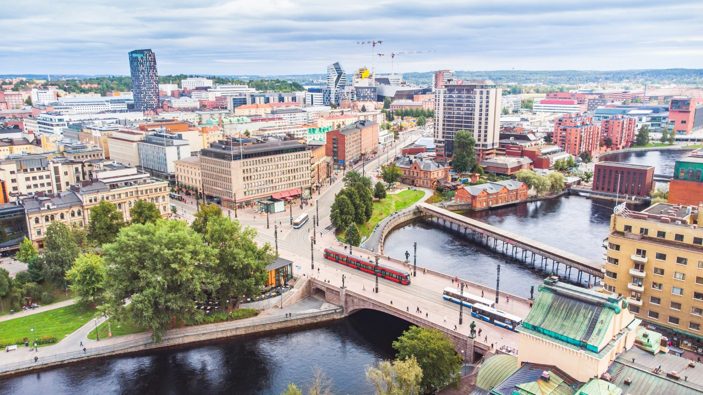

Tampere
Attractions
Moomin Museum
Perfect for fans of the beloved Moomin characters, this museum showcases the life and works of the Finnish author Tove Jansson.
Tampere Art Museum
Exhibits both Finnish and international art, including works by famous Finnish artists like Hugo Simberg and Akseli Gallen-Kallela.
Activities
Sauna Experience
Embrace Finnish culture by enjoying a traditional sauna experience. Tampere offers several public saunas where you can relax and unwind.
Boat Tours
Take a boat tour on the serene waters of Lake Näsijärvi or Lake Pyhäjärvi, offering picturesque views of the surrounding landscapes.
Dining
Local Cuisine
Sample traditional Finnish dishes at local restaurants, including hearty soups, fresh seafood, and delicious pastries like pulla (Finnish sweet bread).
Cafés and Bakeries
Enjoy a cup of coffee and a pastry at one of Tampere's cozy cafés or bakeries, many of which feature locally sourced ingredients.
Transportation
Public Transportation
Tampere has an efficient public transportation system, including buses and trams, making it easy to navigate the city and its surroundings.
Walking
Many of Tampere's attractions are within walking distance of each other, so put on some comfortable shoes and explore the city on foot.
Accommodation
Hotels
Tampere offers a range of accommodation options, from luxury hotels to budget-friendly hostels, ensuring there's something to suit every traveler's needs and preferences.
Airbnb
Consider renting a cozy apartment or house through Airbnb for a more local and personalized accommodation experience.